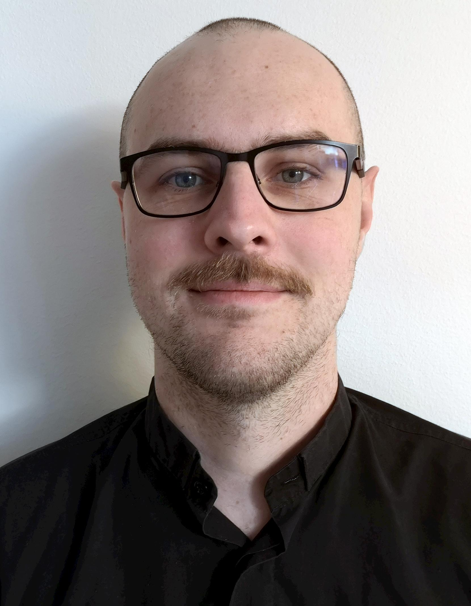

Sylvain Buisson
Profile
After studying philosophy and HR, I came to the conclusion that my true love was web-development. I brought theories and methods to my coding, and still care about usebility.
I am always looking to learn: new frameworks, new tips, new designs - while I hope to bring a fresh perspective (and some fun) to your team.
Language
French (native)
English (fluent)
Danish (TBA)
HTML
CSS
Javascript
Social Media
Contact
buisson.sylvain@gmail.com
+4522190264
Work Experiences
Digital training & Development Project Manager
Talent Researcher
HR & Change Consultant
Assistant Talent Development Project Manager
Ubisoft
06/2014 to 08/2015 (1 year 3 months)
Ubisoft is a leading video game company, the creators of original and immersive worlds like Assassin's Creed, Far Cry, The Crew or Watch Dogs.
Within the Knowledge management & Learning team, I implement programs and tools at the Group level, to identify, build, and reinforce key behaviors and competencies (soft skills and management skills) in alignment with the vision and core values of Ubisoft and the Group's guidelines.
- Developed and produced an eLearning Module on "Group dynamics"
- Designed a project to improve learning and reading at Ubisoft
- Designed a project to improve learning and reading at Ubisoft- Created content and support for a training on Collaboration.
- Created content, activities and support for a training made for Community managers
Education
KEA - Københavns Erhvervsakademi
Sciences Po Paris
Master in Human Resources and Organization
2013 / 2015
The Human Resources Management Master Program at Sciences Po is designed for students looking for careers in strategic human resources management and in management consulting, either at companies or consulting firms. To train HR specialists capable of meeting recruiters' requirements, this Master focuses on four key educational objectives:
- Acquisition of solid knowledge of the corporate world, management tools and labor law ;
- Familiarity with the international environment (courses in foreign languages and intercultural management) ;
- Ability to be rapidly operational. The program therefore has a highly practical focus alternating with apprenticeship periods in a company ;
- Ability to assess the existing situation and participate in formulating policies in the different fields of human resources and labor relations thanks to a very solid grounding in the social sciences (sociology of organizations, the economics of work, social psychology).